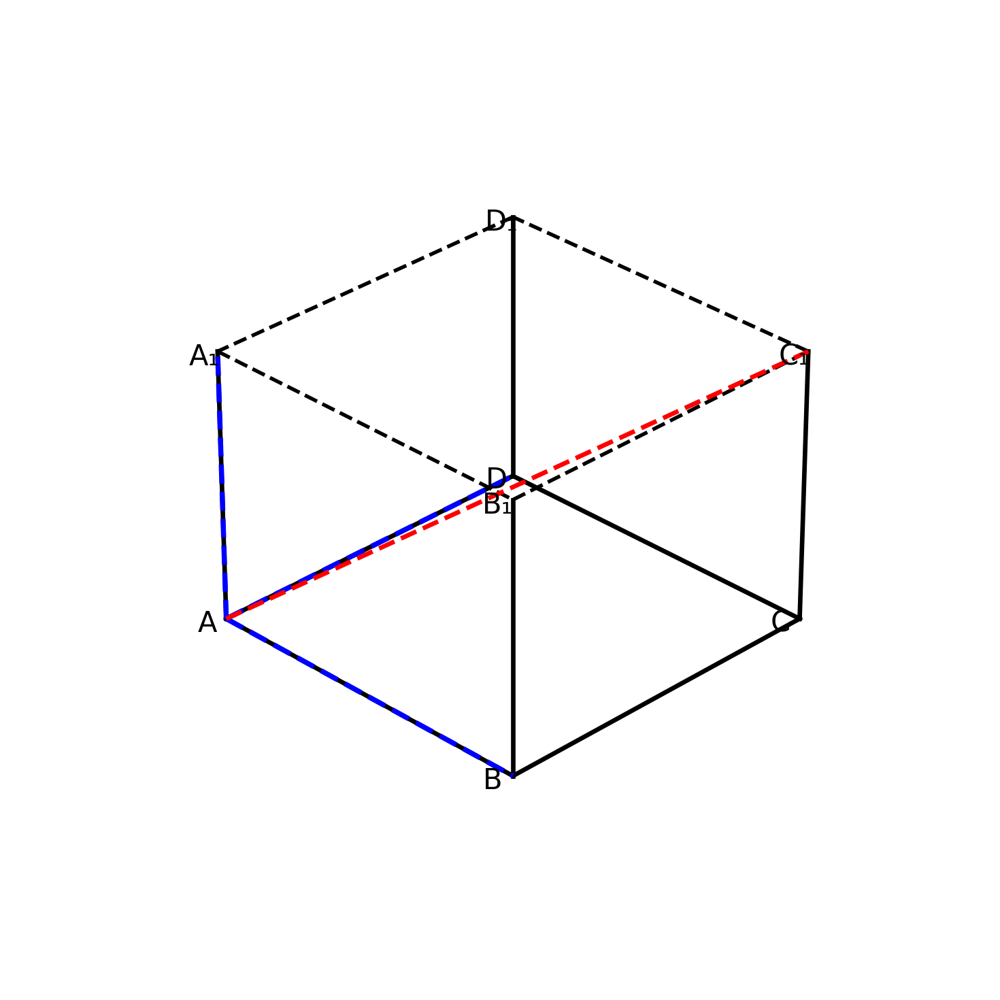
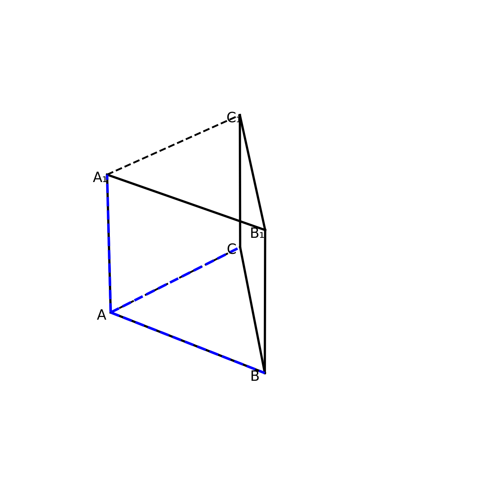
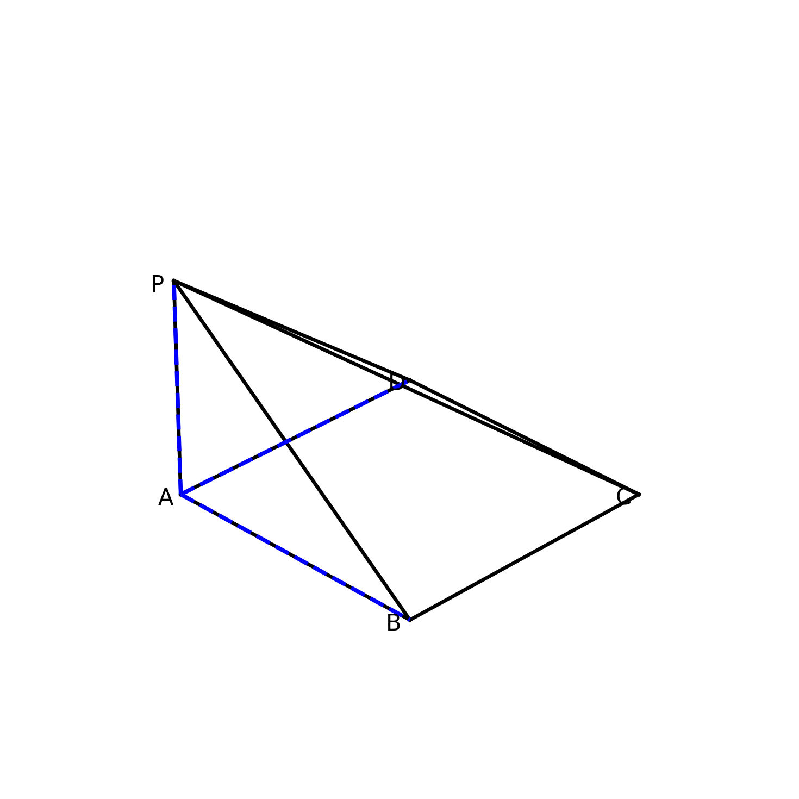
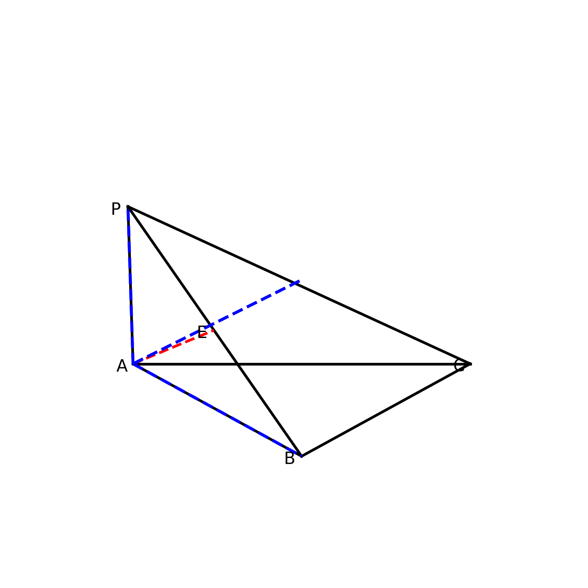

1. 已知集合 \(A=\{x\mid \log_2(x^2-3x+2)>1\}\)，\(B=\{x\mid 2^{x-1}>4\}\)，则 \(\complement_{\mathbb{R}}(A\cup B)=\)（）
2. 若复数 \(z\) 满足 \(z(1+\text{i})=|1-\sqrt{3}\text{i}|\)，则 \(z\) 的虚部为（）
3. 已知向量 \(\boldsymbol{a},\boldsymbol{b}\) 满足 \(|\boldsymbol{a}|=2\)，\(|\boldsymbol{b}|=1\)，\((2\boldsymbol{a}-\boldsymbol{b})\perp\boldsymbol{b}\)，则 \(\boldsymbol{a}\) 与 \(\boldsymbol{b}\) 夹角为（）
4. 正方体 \(ABCD-A_1B_1C_1D_1\) 棱长为2，\(M\) 为 \(A_1D\) 中点，则异面直线 \(AC_1\) 与 \(BM\) 所成角余弦值为（）

5. 已知 \(\{a_n\}\) 为等比数列，\(a_1+a_3=10\)，\(a_2+a_4=5\)，则 \(a_1a_2\cdots a_n\) 最大值为（）
6. 将函数 \(f(x)=\sin2x+\sqrt{3}\cos2x\) 左移 \(\dfrac{\pi}{6}\)，所得图象对称轴为（）
7. 双曲线 \(\dfrac{x^2}{a^2}-\dfrac{y^2}{b^2}=1\) 离心率 \(e=2\)，焦点到渐近线距离为 \(\sqrt{3}\)，则方程为（）
8. 已知 \(f(x)=e^x - ax^2\) 在 \((0,+\infty)\) 单调递增，则 \(a\) 最大值为（）
9. 已知 \(X\sim N(2,\sigma^2)\)，\(P(X<1)=0.2\)，则（）
10. 直线 \(y=kx+2\) 与圆 \((x-1)^2+y^2=4\) 相交，则 \(k\) 可取（）
11. 直三棱柱 \(ABC-A_1B_1C_1\)，\(\angle ACB=90^\circ\)，\(AC=BC=AA_1=2\)，正确的有（）

12. 已知 \(f(x)=x|x-2a|\)，\(a>0\)，正确的有（）
13. 若 \(\tan\alpha=3\)，则 \(\dfrac{\sin2\alpha}{\sin^2\alpha+\cos^2\alpha}=\) ________
14. \((2x-\dfrac{1}{\sqrt{x}})^6\) 常数项为 ________
15. 四棱锥 \(P-ABCD\)，底面正方形，\(PA\perp\) 底面，\(PA=AB=2\)，\(E\) 为 \(PC\) 中点，则 \(DE\) 与面 \(PAB\) 所成角正弦值为 ________

16. 已知 \(f(x)=\begin{cases} e^x, & x\le0 \\ \ln x, & x>0 \end{cases}\)，\(f(a)=f(b)\)，\(a\neq b\)，则 \(a+2b\) 最小值为 ________
在 \(\triangle ABC\) 中，\(a=3\)，\(b=2\sqrt{3}\)，\(\cos B=\dfrac{\sqrt{3}}{3}\)。
（1）求 \(\sin A\)；（2）求 \(c\)。
已知 \(\{a_n\}\) 满足 \(a_1=1\)，\(a_{n+1}=3a_n+2\)。
（1）证明 \(\{a_n+1\}\) 等比；（2）求 \(\left\{\dfrac{1}{a_n}\right\}\) 前\(n\)项和\(T_n\)。
三棱锥 \(P-ABC\)，\(PA\perp\) 面 \(ABC\)，\(AB\perp BC\)，\(PA=AB=BC=2\)，\(E\) 为 \(PB\) 中点。
（1）证明 \(AE\perp\) 面 \(PBC\)；（2）求二面角 \(A-PC-B\) 余弦值。

椭圆 \(C:\dfrac{x^2}{4}+\dfrac{y^2}{3}=1\)，过右焦点\(F\)直线交\(A,B\)，\(\overrightarrow{AF}=2\overrightarrow{FB}\)。
（1）求直线方程；（2）求\(\triangle OAB\)面积。
已知 \(f(x)=x\ln x - ax + 2a\)。
（1）讨论单调性；（2）若 \(f(x)\ge0\) 恒成立，求\(a\)范围。
曲线 \(C_1:\begin{cases}x=2\cos\theta\\y=\sqrt{3}\sin\theta\end{cases}\)，\(C_2:\rho=4\cos\theta\)。
（1）普通方程；（2）交点距离。